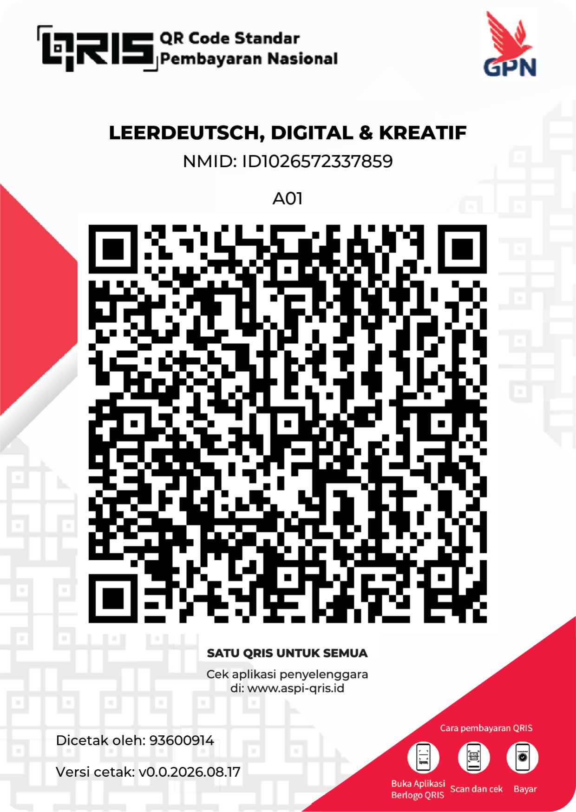

Pilih level kemampuan atau klik artikel untuk mulai membaca (semakin tinggi level, semakin panjang & mendalam materinya):
Portal berita resmi Jerman:
📌 Nachrichtenleicht (Berita Mudah A2-B1) 📌 DW Learn German (Media & Audio) 📌 Tagesschau (Berita Utama Tingkat Mahir)Pilih arah terjemahan cerdas di bawah ini:
Daftar kata sulit yang Anda simpan dari bacaan. Klik kartu untuk melihat arti bahasa Indonesianya!
Terima kasih banyak sudah menggunakan portal belajar ini! Jika website ini membantu perjalanan belajar bahasa Jerman Anda, Anda dapat memberikan dukungan seikhlasnya secara aman melalui QRIS di bawah ini:

Dapat di-scan via BCA, Mandiri, GoPay, OVO, DANA, dll
Halo! Saya Leer, pembuat dari LeerBroDeutsch. Website ini dirancang khusus sebagai pusat media digital mandiri untuk mendokumentasikan proses belajar bahasa Jerman.
"Menjadi ekosistem digital terdepan yang mendefinisikan ulang cara generasi muda menguasai bahasa Jerman secara mandiri—menggabungkan kedalaman materi, estetika modern, dan teknologi untuk mencetak talenta global yang kompetitif."